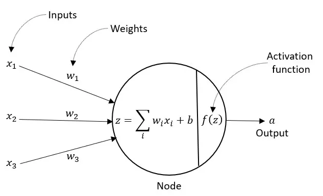

Source: Download original sample
Neural Networks are supervised learning models built from simple connected units that process numerical inputs. Each unit applies a weighted sum to its inputs, adds a bias term, and passes the result through an activation function. This structure (as visualized in Fig. 1) allows the network to learn patterns that are not captured by basic linear methods.

A single unit computes a value of the form f(w · x + b), where w is a set of weights, x is the input vector, b is a bias, and f is an activation function such as ReLU or sigmoid (Fig. 2). By arranging many of these units into layers, the network transforms the data step by step until it reaches a final prediction.

Training relies on backpropagation, which is a procedure that measures how each weight contributes to the model’s error. The weights are then updated in the direction that reduces this error. Repeating this process over many epochs allows the network to improve its accuracy on labeled data.
Supervised learning requires labeled data. The dataset used here includes input features and a binary label. The data is divided into two disjoint subsets: a Training Set used to build the model, and a Testing Set used to evaluate accuracy. These sets must remain separate to ensure unbiased evaluation.

Below are samples of the Training and Testing sets used for the SVM model.


The Training Set and Testing Set were created using a randomized split to ensure they are disjoint. The labels used for this model are binary, representing two possible outcomes for classification.
The neural network model was implemented in Python using TensorFlow/Keras. The model includes one hidden layer with at least three units, uses activation functions for both hidden and output layers, and is trained over multiple epochs. After training, the model is evaluated using the Testing Set.
Below are the required images showing the confusion matrix and the last five epochs of training.


The neural network produced measurable accuracy on the Testing Set. The confusion matrix summarizes correct and incorrect classifications. The architecture diagram below illustrates the structure of the model, including the input layer, hidden layer, output layer, weight matrices, and activation functions.


This section summarizes what the neural network reveals about the topic, including patterns learned from the data and predictions supported by the model.